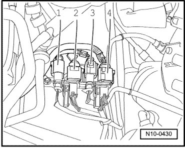
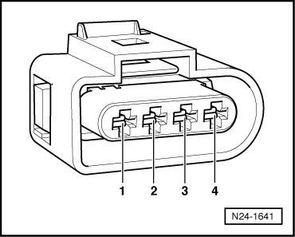
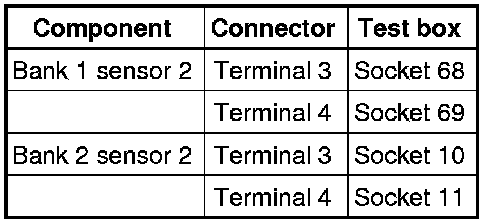

Oxygen Sensors and Oxygen Sensor Regulation After Catalytic Converter, Checking
Diagnostic Procedures
Oxygen Sensors and Oxygen Sensor Regulation After Catalytic Converter, Checking
• When servicing terminals 3 and 4 in harness connector of oxygen sensors, use only gold-plated terminals.
Special tools, testers and auxiliary items required
• Multimeter (VAG1526) or Multimeter (VAG1715)
• Connector test kit (VAG1594)
• Wiring diagram
Test requirements
• Fuses in E-box (plenum chamber, left) must be OK:

• Motronic Engine Control Module (ECM) Power Supply Relay 2 (J670) must be OK, check:
• Battery voltage must be at least 11.5 volts.
• All electrical consumers such as, lights and rear window defroster must be switched off.
• Parking brake must be engaged or else daylight driving lights will be switched on.
• For vehicles with automatic transmission, selector lever must be in P.
• If vehicle is equipped with an A/C system, it must be switched off.
• Ground (GND) connections between engine and chassis must be OK.
• Exhaust system must be properly sealed between catalytic converter and cylinder head.
• Coolant temperature must be at least 80°C , Diagnostic mode 1: Check measured values; PID 5, Coolant temperature.
• Oxygen sensor heater for oxygen sensor behind catalytic converter must be OK, check.
Function test
- Select the lambda test results and check whether the specified values are being reached , Diagnostic mode 5: Check output of oxygen sensor signals.
- End diagnosis and switch ignition off.
If specified values are not obtained:
- Test oxygen sensor wires according to wiring diagram.
Checking oxygen sensor wires
- Connect test box to control module wiring harness , connect test box for wiring test.
- Disconnect 4-pin harness connector to the respective oxygen sensor:

• Oxygen Sensor (O2S) Behind Three Way Catalytic Converter (TWC) (G130), bank 1, 4-pin harness connector 2-,
• Oxygen Sensor (O2S) 2 Behind Three Way Catalytic Converter (TWC) (G131), bank 2, 4-pin harness connector - 3 -.
- Check wires between test box and 4-pin connector to Engine Control Module (ECM) for open circuit according to wiring diagram.

Wire resistance: max. 1.5 ohms

- Check wires for short circuit to B+ or Ground (GND).
Specified value: infinite ohms
If no malfunctions are found in wires:
- Replace respective oxygen sensor:
• Heated Oxygen Sensor (HO2S) (G130) bank 1 ,
• Oxygen Sensor (O2S) 2 Behind Three Way Catalytic Converter (TWC) (G131).
Final Procedures
After the repair work, the following work steps must be performed in the following sequence:
1. Check the DTC memory. Refer to --> [ Diagnostic Mode 03 - Read DTC Memory ] Diagnostic Modes 01 - 09.
2. If necessary, erase the DTC memory. Refer to --> [ Diagnostic Mode 04 - Erase DTC Memory ] Diagnostic Modes 01 - 09.
3. If the DTC memory was erased, generate readiness code. Refer to --> [ Readiness Code ] Monitors, Trips, Drive Cycles and Readiness Codes.